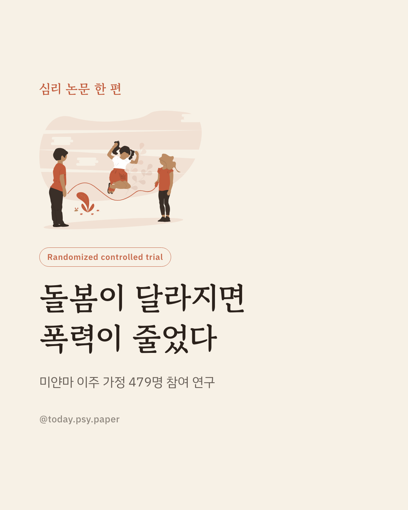
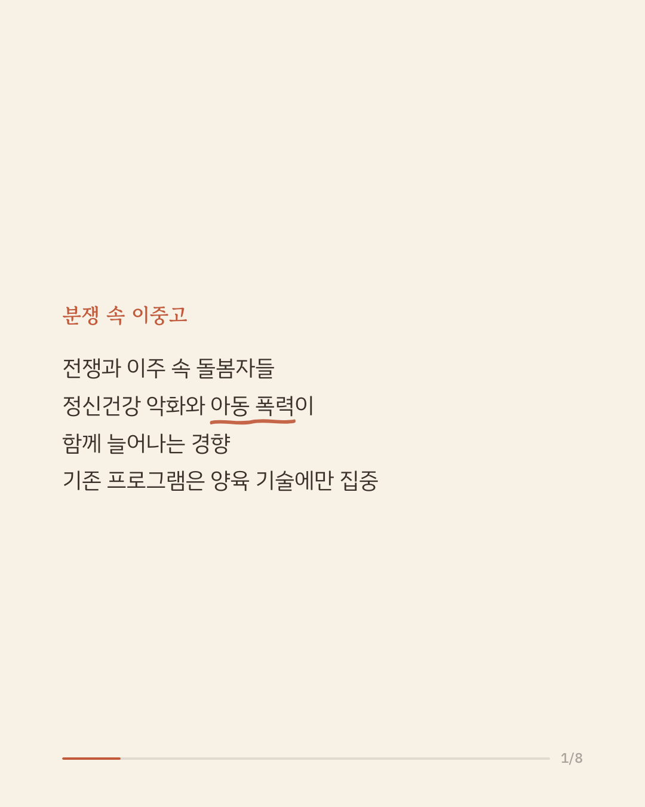
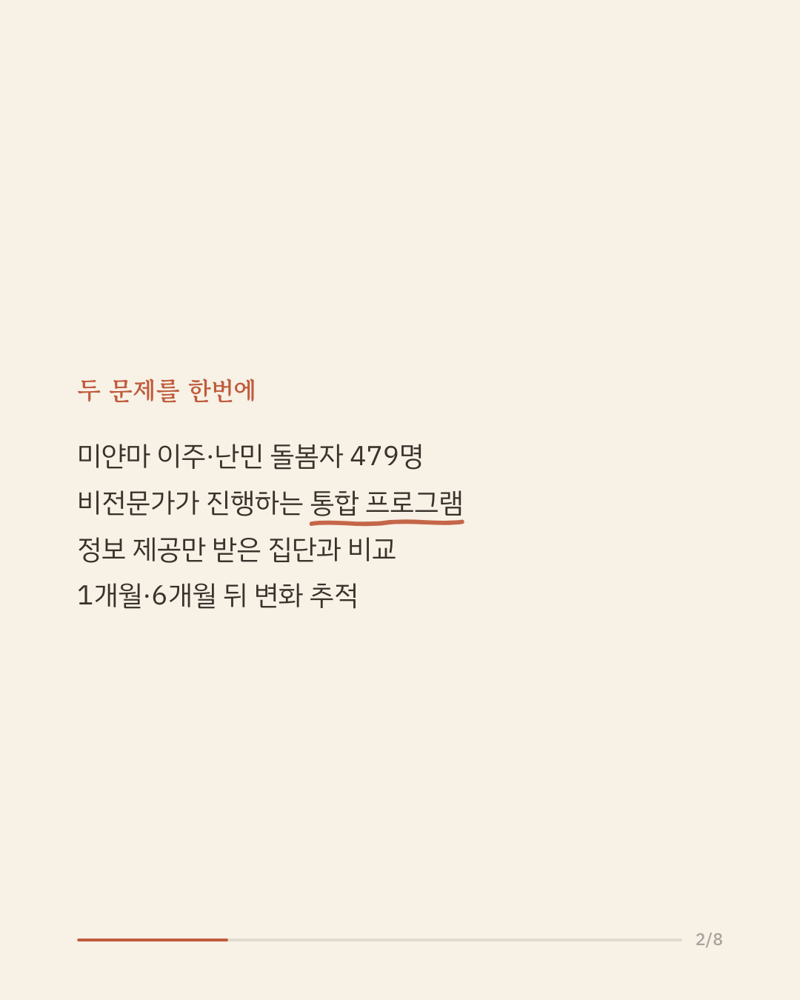
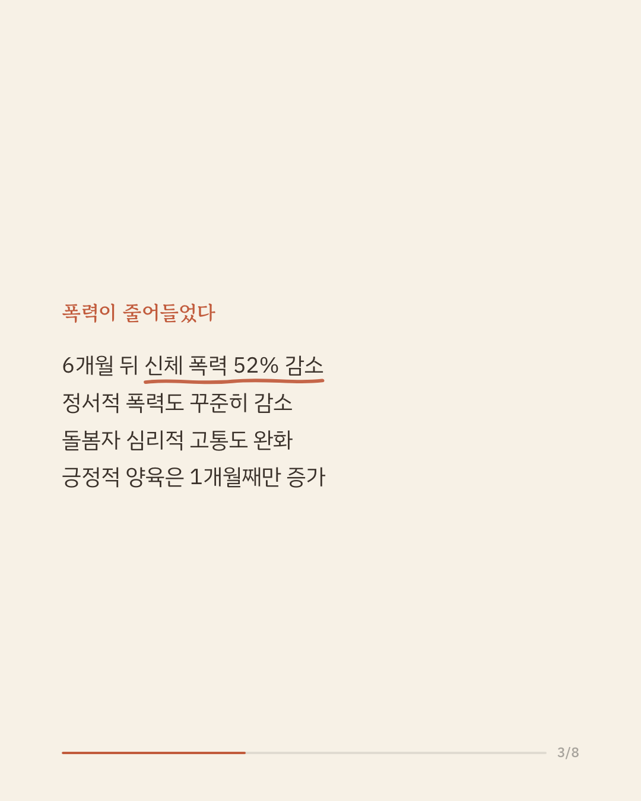
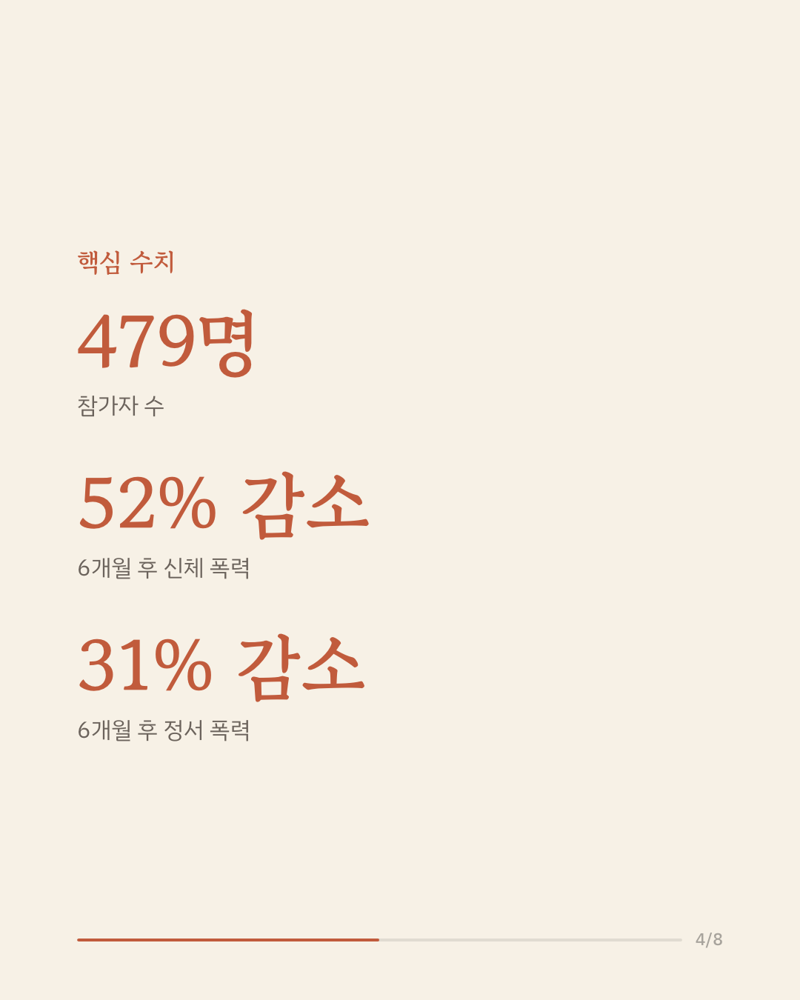
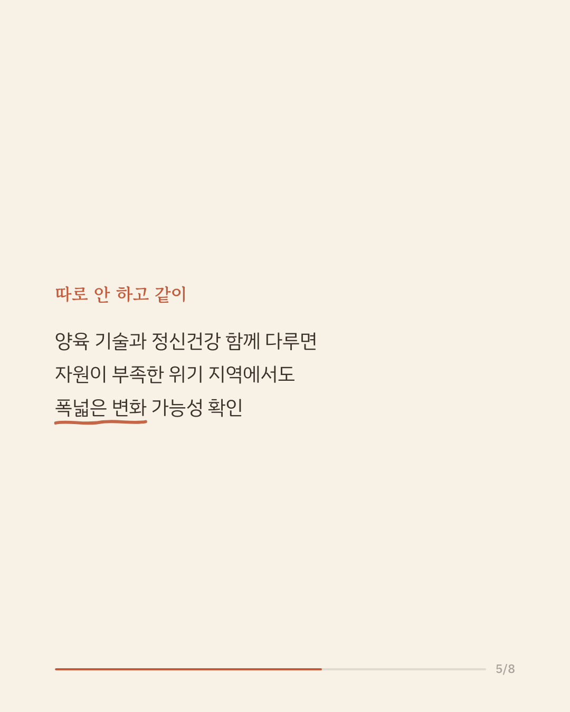
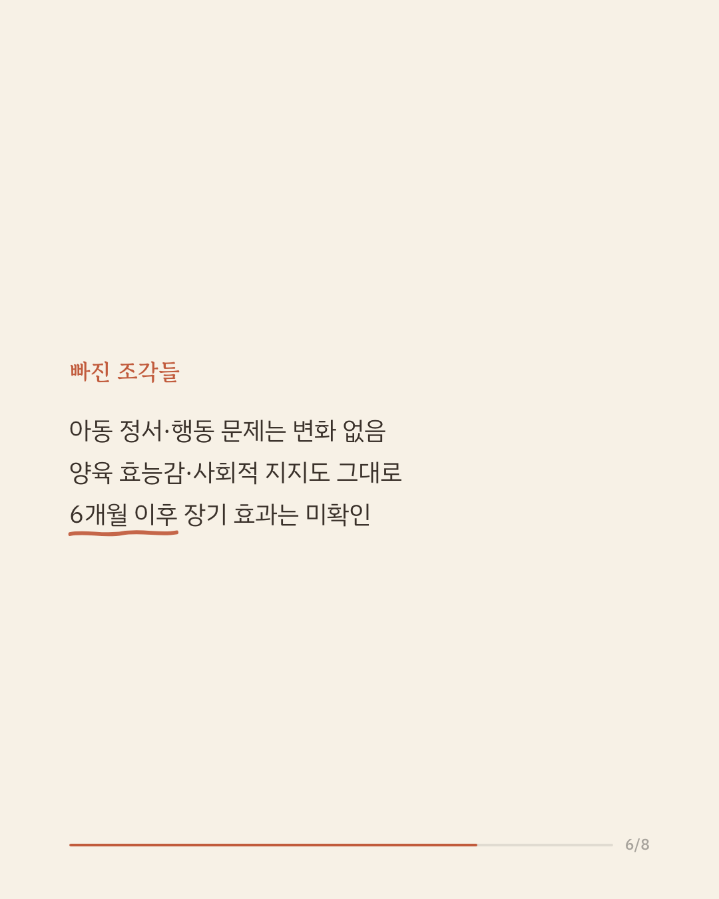
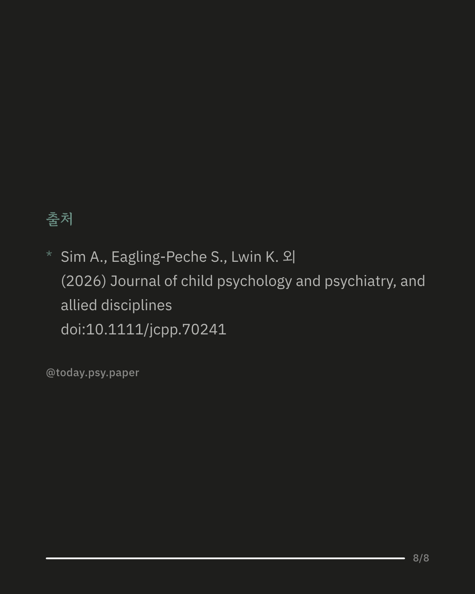

전쟁과 이주를 겪은 미얀마 가정에서는 돌봄자의 정신건강 문제와 아동에 대한 폭력이 함께 나타나는 경우가 많습니다. 기존 양육 교육 프로그램은 대개 양육 기술 향상에 집중했고, 돌봄자 자신의 정신건강 문제는 따로 다루지 않았습니다. 이번 연구는 태국 내 미얀마 이주·난민 돌봄자 479명을 대상으로, 양육 교육과 정신건강 지원을 함께 제공하는 통합 프로그램의 효과를 확인했습니다. 참가자를 이 프로그램을 받는 집단과 지역 서비스 정보만 제공받는 집단으로 무작위 배정하고, 1개월·6개월 뒤 변화를 비교했습니다. 그 결과 개입 집단에서 아동 폭력이 6개월 뒤 신체적으로는 약 52%, 정서적으로도 꾸준히 줄었고, 돌봄자의 심리적 고통 역시 함께 감소했습니다. 외상 후 스트레스 증상, 정서조절, 가족 기능 등 여러 지표에서도 개선이 나타났습니다. 다만 아동의 정서·행동 문제나 돌봄자의 양육 효능감, 사회적 지지에서는 뚜렷한 변화가 없었고, 참가자는 태국 내 미얀마 이주·난민 돌봄자로 한정되어 다른 분쟁·이주 상황에 그대로 적용하기는 조심스럽습니다. Journal of Child Psychology and Psychiatry (2026), 'Effects of an integrated parenting and mental health intervention on violence reduction and caregiver mental health among migrant and displaced families from Myanmar' #아동폭력예방 #양육프로그램 #난민정신건강 #부모교육연구
python3 publish.py 42754240